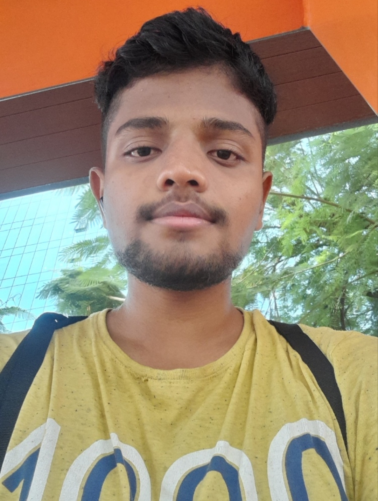

Building things
that mean something.
I’m Tejas — Cyber Security engineering student, product builder and cybersecurity enthusiast. I turn ideas into useful digital experiences through thoughtful engineering.

Projects in focus.
A look at what I’m building
and exploring.
Engineer by study.
Builder by instinct.
I enjoy taking an idea from a blank page to something people can use.
I’m pursuing a B.E. in Cyber Security at VTU, while building practical skills across software development, web technologies and security. I like understanding how systems work — from the interface people interact with to the logic and infrastructure behind it.
Outside coursework, I work on independent projects,do learn DSA, experiment with new technologies,find security flaws and keep learning by building.
Explore my GitHubBuilding with intent.
FOUNDER · INDEPENDENT AGENCY
Eshwara Advertising
An independent agency founded to explore web development and digital solutions. I’m currently building its foundation, defining its direction and developing my own capabilities across the web development process.
Early-stage venture · Client portfolio not yet establishedTools of the trade.
A growing toolkit for
building and securing software.
LANGUAGES
Programming
I'm very fluent and have deep knowledge in Python · Further i have experience in C , Java , JavaScript
DEVELOPMENT
Web technologies
HTML · CSS · Flask · Git · Codex
SECURITY
Security tools
Wireshark · Nmap · Metasploit · Burp Suite · Kali Linux
FOUNDATIONS
Core concepts
Data Structures & Algorithms · Networking · OWASP Top 10 · Web Security
Learning the foundations.
Bachelor of Engineering
Cyber Security
Visvesvaraya Technological University (VTU)Have an idea?
Let’s talk.
For opportunities, collaborations or a conversation about technology and building products.
Send me an email